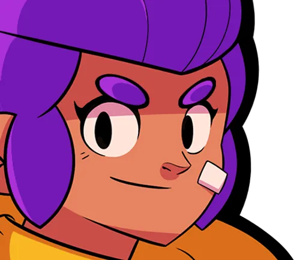
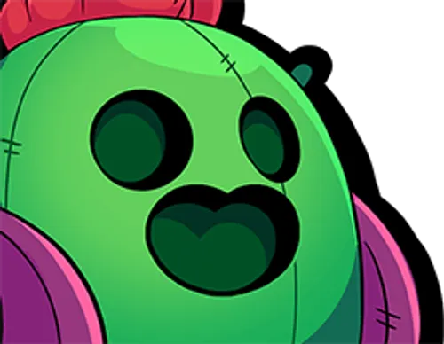
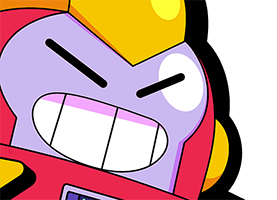

Descrição dos brawlers:

A Shelly é uma Brawler do tipo “Destruidor” e é uma Brawler Inicial, visto que ela é desbloqueada no início do jogo. Ela tem vida moderada e tem uma carabina tende a causar mais dano quanto mais perto ela estiver de seu alvo, tornando-a uma excelente para combates de curto a médio alcance. Seus ataques também se espalham. Seu Super permite que ela elimine muitos obstáculos e elimine os Brawlers inimigos.

O Spike é um Brawler do tipo “Destruidor” e é de raridade Lendária. Ele tem com pouca vida e especializado em lidar com inimigos agrupados. Seu Ataque e Super são ótimos para lidar com vários inimigos de uma só vez.

O Wattson(Surge) é um brawler do tipo “Destruidor” e de raridade Lendária. Ele tem uma baixa quantidade de vida e causa dano moderado, mas conforme você usar a sua super habilidade, poderá evoluí-lo para outro estágio, ganhando vantagens e melhorias, até o nível 4 durante a partida.